Poydevorning o‘lchamlarini aniqlash
Har qanday inshoot loyihasini tuzishda birinchi navbatda loyiha – qidiruv
ishlari olib boriladi, ya‘ni loyihalanayotgan inshoot qurilish maydonining6
geologiyasi, gidrogeologiyasi, iqlimi va boshqa tabiiy sharoitlari to‘g‘risida
ma‘lumotlar to‘planib tahlil qilinadi va ushbu qurilish maydonining sharoitiga mos
keladigan poydevor turi hamda uning konstruksiyasi tanlanadi.
datda poydevor ostidagi gruntning mustahkamligi inshoot
ustun(tayanch)lari tayyorlangan betonning mustahkamligidan kichikdir, shunga
ko‘ra poydevorning pastki qismi enliroq(kengroq) qabul qilinadi. Beton
cho‘zilishga, egilishga va yorilishga bardoshliligi pastdir, shu sababli
poydevorning bikr bo„lishini ta‟minlash zarur. Bunda poydevorning pastga tomon
eng katta kengaytirilish darajasi betonning bikrlik burchagi α ga qarab
belgilanishi shart. Ushbu burchak ko‘prik ustunlari konstruksiyalari uchun 300 dan
oshmaydi.
Demak, poydevor ostki yuzasining o‘lchamlari quyidagi chekli qiymatlardan
katta bo‘lmasligi kerak:
b ≤ b chek l ≤ lchek
Poydevorning cheklangan kengligi va uzunligi yuqoridagi talablarga muvofiq
quyidagi formula yordamida hisoblanadi.
bchek= bt +2*dp* tg 300 ; m
lchek= lt +2*dp* tg 300 ; m
Bu yerda : bt - akveduk ustun(tayanch)ining kengligi(eni);
lt - akveduk ustun(tayanch)ining uzunligi;
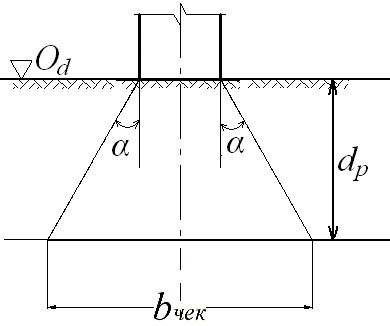
Poydevorning cheklangan kengligini aniqlashga doir hisobiy sxema
Demak, poydevor ostki yuzasining o‘lchamlari quyidagi chekli qiymatlardan
katta bo‘lmasligi kerak:
b ≤ b chek l ≤ lchek
b chek = bt +2*dp* tg 30 0 ; m
lchek= lt +2*dp* tg 30 0 ; m
Bu yerda : bt - akveduk ustun(tayanch)ining kengligi(eni);
lt - akveduk ustun(tayanch)ining uzunligi;
Poydevor ostki yuzasining o‘lchamlari (kengligi b va uzunligi l qiymatlari)
tanlash usuli yordamida hisoblab chiqiladi. Dastlab b=(0,5 ‚ 0,9)* b chek deb
qabul
qilinadi. So„ngra, b ni quyidagicha o‘zgartirish mumkin:
- poydevorning maksimal kengligi
bmax =bchek;
- poydevorning minimal kengligi
bmin = bt + 0,4 m
Zamin juda mustahkam bo‘lgan hollarda poydevor chetlarining kengligi
konstruktiv jihatdan kamida 0,2 m qilib olinadi. Poydevor pog‘onalarining
balandligi quyidagi formula yordamida aniqlanadi:
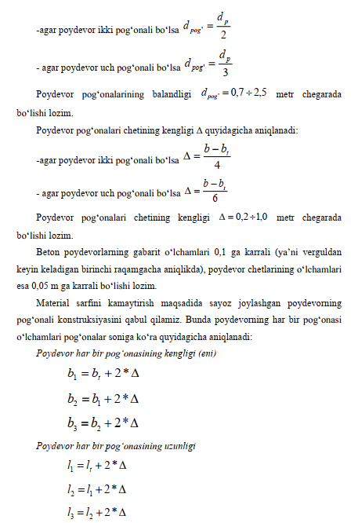
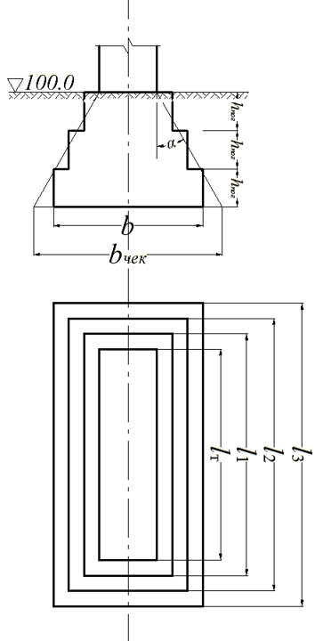
Sayoz joylashgan poydevorning o‘lchamlarini aniqlashga doir
hisobiy sxema
Poydevor ostki yuzasinining o‘lchamlari ma‘lum bo‘lgach, poydevor orqali
zaminga tushadigan bosimning maksimal G max , o‘rtacha G o'rt va
minimal min
qiymatlari aniqlanadi hamda zamin gruntining hisobiy qarshiligi R (zaminning yuk
ko‘tara olish qobiliyati)ga taqqoslanadi.
Nomarkaziy yuklangan poydevor orqali zaminga ta‘sir qiluvchi bosim
qiymatlari quyidagicha aniqlanadi:
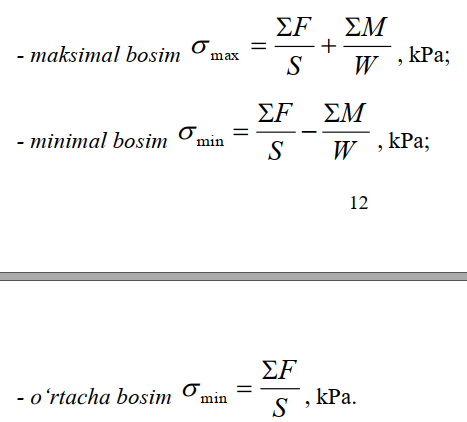
Bu yerda
ΣF- poydevor quyi sathiga nisbatan ta‟sir etuvchi jami vertikal kuchlar
yig‘indisi, kN;
S - poydevorning ostki yuzasi, m 3;
ΣM – poydevor ostki yuzasi og‘irlik markaziga nisbatan moment hosil
qiluvchi kuchlardan olingan momentlar yig‘indisi, Kn*m ;
W – poydevor ostki yuzasining qarshilik momenti, m 3
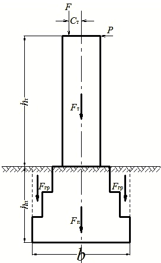
Poydevor orqali zaminga ta’sir qiluvchi zo‘riqishlarni
aniqlashga doir hisobiy sxema
Poydevor ostki sathi yuzasiga nisbatan ta‘sir qiluvchi vertikal kuchlar
yig‘indisi quyidagicha aniqlanadi:
EF = F + F t + F p + F gr kN
Bu yerda
F- tayanchga qo‘yilgan vertikal kuch, kN;
FT – akvedukning tayanch qismidan ta‘sir qiluvchi og‘irlik kuchi
bo‘lib, quyidagicha aniqlanadi:
FT = VT * γ b , kN
γb – tayanch materialining solishtirma og‘irligi;
VT - inshoot tayanchining hajmi bo‘lib, quyidagicha aniqlanadi:
VT = bt *lt *ht , m 3
FP – akveduk poydevoridan ta‘sir qiluvchi og‘irlik kuchi bo‘lib,
quyidagicha aniqlanadi:
FT = VP *γb , kN;
γb – poydevor materialining solishtirma og‘irligi;
VP - inshoot poydevorining hajmi bo„lib, poydevorning qabul
qilingan konstruksiyasi bo„yicha quyidagi formulalar yordamida aniqlanadi:
-agar poydevor ikki pog‘onali bo‘lsa
VP = b1 *l1 *d pog' + b2 *l 2 *d pog' , m
3
-agar poydevor uch pog‘onali bo‘lsa
VP = b1 *l1 *dpog' + b2 *l2
*dpog' + b3 *l3 *dpog' , m3
F gr – akveduk poydevorining pog‘onalari ustida joylashgan gruntdan
ta‘sir qiluvchi og‘irlik kuchi, kN;
Fgr = Vgr *γsat , kN;
γsat – poydevor pog‘onalari ustida joylashgan gruntning suvga
to‘yingan holatdagi solishtirma og‘irligi;
Vgr - poydevor pog‘onalari ustida joylashgan grunt hajmi bo‘lib,
poydevorning joylashgan o‘rniga ko‘ra quyidagi formulalar yordamida aniqlanadi:
-agar poydevor daryo o‘zanida joylashgan bo‘lsa
V gr = b*l *d P - V V , m 3
-agar poydevor daryo qirg‘og‘ida joylashgan bo‘lsa
V gr =b *l *( d P + z) -V P - b t * l
t
* z , m 3
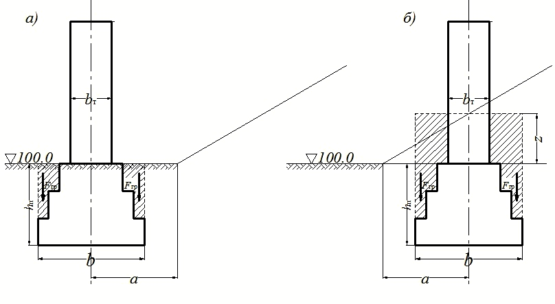
Poydevor chetlaridagi gruntning hajmini hisoblash sxemasi
Poydevor ostki yuzasi og‘irlik markaziga nisbatan moment hosil qiluvchi
kuchlardan olingan momentlar yig‘indisi ΣM quyidagicha aniqlanadi:
EM = F *C t + P *(ht + dp ) Kn*m
Bu yerda
F- tayanchga qo„yilgan vertikal kuch, kN;
St – kuch ekssentrisiteti;
P – tayanchga ta‟sir qiluvchi gorizontal kuch;
ht – tayanchning balandligi;
dP – poydevorning joylashish chuqurligi.
Poydevor ostki yuzasi S va qarshilik momenti W quyidagicha aniqlanadi:
S = b*l
W = b2*l / 6
Poydevor orqali zaminga ta‟sir qiluvchi bosim qiymatlari aniqlangach,
quyidagi mustahkamlik va iqtisodiy samaradorlik shartlari tekshiriladi.
1-shart. Poydevor orqali zaminga tushadigan o'rtacha bosim qiymati G o'rt
zamin gruntining hisobiy qarshiligi R dan kichik yoki unga teng bo'lishi kerak,
ya'ni:
G o'rt
<= R
2-shart. Poydevor orqali zaminga tushadigan maksimal bosim qiymati G max
zamin gruntining hisobiy qarshiligi R ni 20 % ga oshirilgan qiymatidan kichik yoki
unga teng bo‘lishi kerak, ya‘ni
G max
<= 1,2 * R
3-shart. Poydevor orqali zaminga tushadigan maksimal bosim qiymati G
max
va zamin gruntining hisobiy qarshiligi R ni 20 % ga oshirilgan qiymati
orasidagi
tafovut 5 % dan oshmasligi kerak, ya‘ni
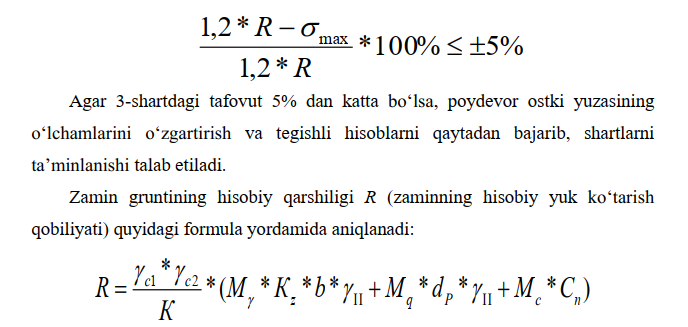
Bu yerda
γs1, γs2 – ish sharoiti koeffitsientlari bo‘lib, grunt turiga hamda gilli
gruntlar( gil, supes, suglinok)ning konsistensiya (oquvchanlik) ko‘rsatkichi
IL
qiymatiga ko‘ra 1-jadvaldan qabul qilinadi.
K – tuzatish koeffitsienti bo‘lib, gruntning ichki ishqalanish burchagi φ
n
va
grunt zarrachalarining solishtirma bog‘lanuvchanligi S n
qiymatlari bevosita
qurilish
maydonidagi gruntni sinash yo‘li bilan aniqlangan hollarda K=1 qabul
qilinadi,agarda ushbu ko‘rsatkichlar berilgan javal va ilovalardan qabul
qilinganda K=1,1
ga teng deb olinadi.
Cn - grunt zarrachalarining solishtirma bog‘lanuvchanligi va φn gruntning
ichki ishqalanish burchagi qiymatlari bo‘lib, grunt turiga, g„ovaklik
koeffitsienti(e)ga hamda gilli gruntlar(gil, supes, suglinok)ning
konsistensiya
(oquvchanlik) ko‘rsatkichi IL qiymatiga ko‘ra 1 , 2 - ilovalardan qabul
qilinadi.
Mγ
, M q , M c - gruntning ichki ishqalanish burchagi φn
ga ko'ra 2-jadvaldan
qabul qilinadigan o„lchov biriligisiz koeffitsientlardir.
- poydevor ostida joylashgan grunt solishtirma og‘irligining
hisoblangan o‘rtacha qiymati; (yer osti suvlari bo‘lgan joylarda suvning
ko‘taruvchi ta‘sirini nazarda tutib hisoblab chiqariladi).
dP – poydevorning minimal joylashish chuqurligi.
Kz
– koeffitsienti b < 10 metr bo„lganda K z =1 qabul qilinadi,
agarda b≥10
metr bo‘lsa, quyidagicha hisoblab topiladi:
K z = Z0 / b + 0.2
bu yerda b – poydevor ostki yuzasining kengligi, Z0 = 8 metr
qabul
qilinadi.
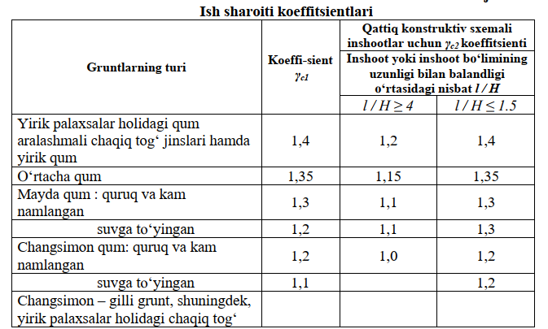
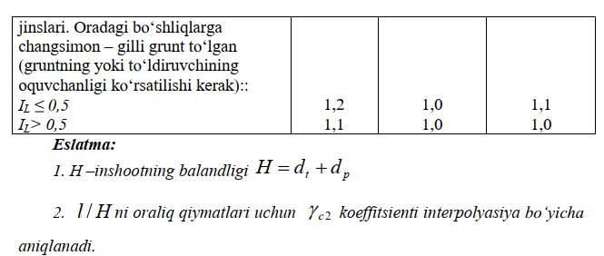
Bino yoki inshootning deformatsiya (shakli o‘zgarishi) bo‘yicha
hisoblanayotgan formulalardagi ф,С,γ va hokazo qiymatlarining II bilan
ifodalangan indeks hisob-kitoblar II guruhga mansub chekli holat
bo‘yicha olib
borilganligini bildiradi va γ,С hamda E qiymatlar 1 va 2-ilovalardagi
normativ
qiymatlariga teng qilib olinadi.
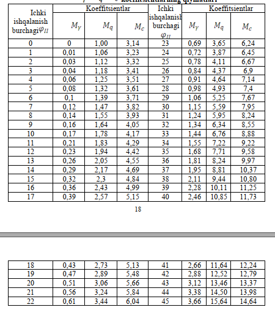
b ≤ b chek l ≤ lchek
Poydevorning cheklangan kengligi va uzunligi yuqoridagi talablarga muvofiq quyidagi formula yordamida hisoblanadi.
bchek= bt +2*dp* tg 300 ; m
lchek= lt +2*dp* tg 300 ; m Bu yerda : bt - akveduk ustun(tayanch)ining kengligi(eni); lt - akveduk ustun(tayanch)ining uzunligi;
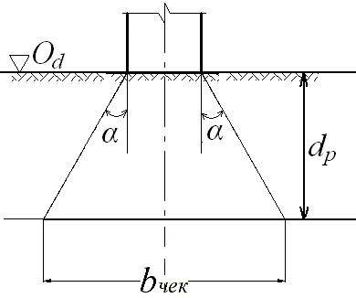
Demak, poydevor ostki yuzasining o‘lchamlari quyidagi chekli qiymatlardan katta bo‘lmasligi kerak:
b ≤ b chek l ≤ lchek
b chek = bt +2*dp* tg 30 0 ; m
lchek= lt +2*dp* tg 30 0 ; m
Bu yerda : bt - akveduk ustun(tayanch)ining kengligi(eni); lt - akveduk ustun(tayanch)ining uzunligi; Poydevor ostki yuzasining o‘lchamlari (kengligi b va uzunligi l qiymatlari) tanlash usuli yordamida hisoblab chiqiladi. Dastlab b=(0,5 ‚ 0,9)* b chek deb qabul qilinadi. So„ngra, b ni quyidagicha o‘zgartirish mumkin: - poydevorning maksimal kengligi bmax =bchek; - poydevorning minimal kengligi bmin = bt + 0,4 m Zamin juda mustahkam bo‘lgan hollarda poydevor chetlarining kengligi konstruktiv jihatdan kamida 0,2 m qilib olinadi. Poydevor pog‘onalarining balandligi quyidagi formula yordamida aniqlanadi:
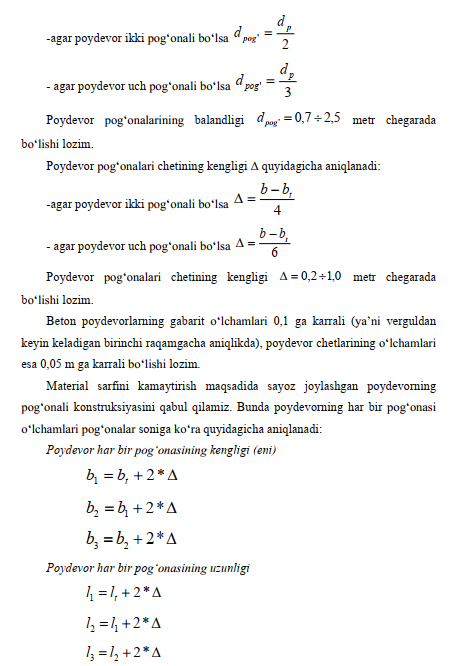
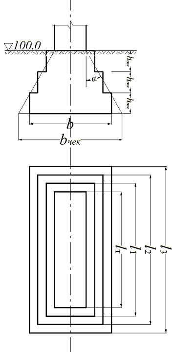
Sayoz joylashgan poydevorning o‘lchamlarini aniqlashga doir hisobiy sxema
Poydevor ostki yuzasinining o‘lchamlari ma‘lum bo‘lgach, poydevor orqali zaminga tushadigan bosimning maksimal G max , o‘rtacha G o'rt va minimal min qiymatlari aniqlanadi hamda zamin gruntining hisobiy qarshiligi R (zaminning yuk ko‘tara olish qobiliyati)ga taqqoslanadi. Nomarkaziy yuklangan poydevor orqali zaminga ta‘sir qiluvchi bosim qiymatlari quyidagicha aniqlanadi:
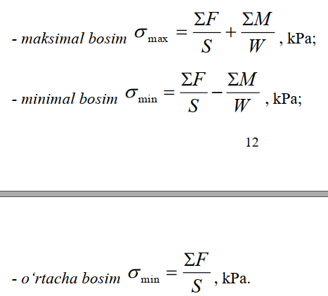
Bu yerda
ΣF- poydevor quyi sathiga nisbatan ta‟sir etuvchi jami vertikal kuchlar yig‘indisi, kN;
S - poydevorning ostki yuzasi, m 3;
ΣM – poydevor ostki yuzasi og‘irlik markaziga nisbatan moment hosil
qiluvchi kuchlardan olingan momentlar yig‘indisi, Kn*m ;
W – poydevor ostki yuzasining qarshilik momenti, m 3
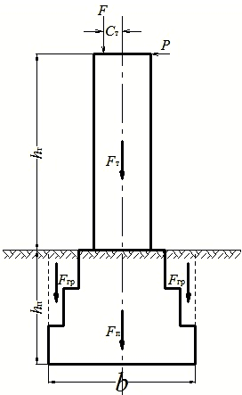
Poydevor ostki sathi yuzasiga nisbatan ta‘sir qiluvchi vertikal kuchlar yig‘indisi quyidagicha aniqlanadi: EF = F + F t + F p + F gr kN
Bu yerda
F- tayanchga qo‘yilgan vertikal kuch, kN; FT – akvedukning tayanch qismidan ta‘sir qiluvchi og‘irlik kuchi bo‘lib, quyidagicha aniqlanadi:
FT = VT * γ b , kN γb – tayanch materialining solishtirma og‘irligi;
VT - inshoot tayanchining hajmi bo‘lib, quyidagicha aniqlanadi:
VT = bt *lt *ht , m 3 FP – akveduk poydevoridan ta‘sir qiluvchi og‘irlik kuchi bo‘lib, quyidagicha aniqlanadi:
FT = VP *γb , kN;
γb – poydevor materialining solishtirma og‘irligi; VP - inshoot poydevorining hajmi bo„lib, poydevorning qabul qilingan konstruksiyasi bo„yicha quyidagi formulalar yordamida aniqlanadi:
-agar poydevor ikki pog‘onali bo‘lsa VP = b1 *l1 *d pog' + b2 *l 2 *d pog' , m 3 -agar poydevor uch pog‘onali bo‘lsa
VP = b1 *l1 *dpog' + b2 *l2 *dpog' + b3 *l3 *dpog' , m3 F gr – akveduk poydevorining pog‘onalari ustida joylashgan gruntdan ta‘sir qiluvchi og‘irlik kuchi, kN; Fgr = Vgr *γsat , kN; γsat – poydevor pog‘onalari ustida joylashgan gruntning suvga to‘yingan holatdagi solishtirma og‘irligi; Vgr - poydevor pog‘onalari ustida joylashgan grunt hajmi bo‘lib, poydevorning joylashgan o‘rniga ko‘ra quyidagi formulalar yordamida aniqlanadi:
-agar poydevor daryo o‘zanida joylashgan bo‘lsa V gr = b*l *d P - V V , m 3
-agar poydevor daryo qirg‘og‘ida joylashgan bo‘lsa V gr =b *l *( d P + z) -V P - b t * l t * z , m 3
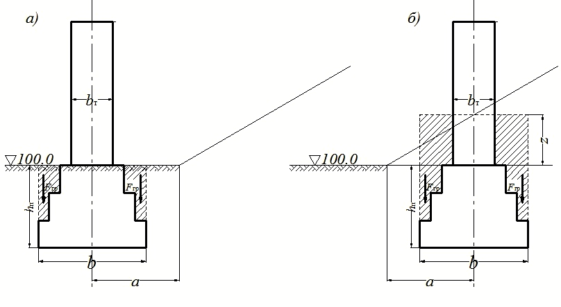
Poydevor ostki yuzasi og‘irlik markaziga nisbatan moment hosil qiluvchi kuchlardan olingan momentlar yig‘indisi ΣM quyidagicha aniqlanadi: EM = F *C t + P *(ht + dp ) Kn*m
Bu yerda
F- tayanchga qo„yilgan vertikal kuch, kN;
St – kuch ekssentrisiteti;
P – tayanchga ta‟sir qiluvchi gorizontal kuch;
ht – tayanchning balandligi;
dP – poydevorning joylashish chuqurligi.
Poydevor ostki yuzasi S va qarshilik momenti W quyidagicha aniqlanadi:
S = b*l
W = b2*l / 6
Poydevor orqali zaminga ta‟sir qiluvchi bosim qiymatlari aniqlangach, quyidagi mustahkamlik va iqtisodiy samaradorlik shartlari tekshiriladi.
1-shart. Poydevor orqali zaminga tushadigan o'rtacha bosim qiymati G o'rt zamin gruntining hisobiy qarshiligi R dan kichik yoki unga teng bo'lishi kerak, ya'ni:
G o'rt <= R
2-shart. Poydevor orqali zaminga tushadigan maksimal bosim qiymati G max zamin gruntining hisobiy qarshiligi R ni 20 % ga oshirilgan qiymatidan kichik yoki unga teng bo‘lishi kerak, ya‘ni
G max <= 1,2 * R
3-shart. Poydevor orqali zaminga tushadigan maksimal bosim qiymati G max va zamin gruntining hisobiy qarshiligi R ni 20 % ga oshirilgan qiymati orasidagi tafovut 5 % dan oshmasligi kerak, ya‘ni
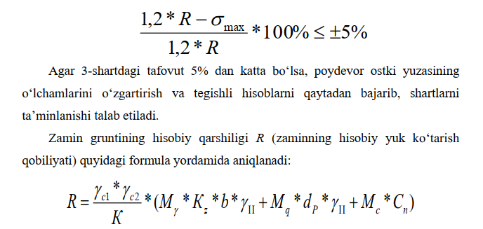
Bu yerda
γs1, γs2 – ish sharoiti koeffitsientlari bo‘lib, grunt turiga hamda gilli gruntlar( gil, supes, suglinok)ning konsistensiya (oquvchanlik) ko‘rsatkichi IL qiymatiga ko‘ra 1-jadvaldan qabul qilinadi. K – tuzatish koeffitsienti bo‘lib, gruntning ichki ishqalanish burchagi φ n va grunt zarrachalarining solishtirma bog‘lanuvchanligi S n qiymatlari bevosita qurilish maydonidagi gruntni sinash yo‘li bilan aniqlangan hollarda K=1 qabul qilinadi,agarda ushbu ko‘rsatkichlar berilgan javal va ilovalardan qabul qilinganda K=1,1 ga teng deb olinadi.
Cn - grunt zarrachalarining solishtirma bog‘lanuvchanligi va φn gruntning ichki ishqalanish burchagi qiymatlari bo‘lib, grunt turiga, g„ovaklik koeffitsienti(e)ga hamda gilli gruntlar(gil, supes, suglinok)ning konsistensiya (oquvchanlik) ko‘rsatkichi IL qiymatiga ko‘ra 1 , 2 - ilovalardan qabul qilinadi. Mγ , M q , M c - gruntning ichki ishqalanish burchagi φn ga ko'ra 2-jadvaldan qabul qilinadigan o„lchov biriligisiz koeffitsientlardir. - poydevor ostida joylashgan grunt solishtirma og‘irligining hisoblangan o‘rtacha qiymati; (yer osti suvlari bo‘lgan joylarda suvning ko‘taruvchi ta‘sirini nazarda tutib hisoblab chiqariladi). dP – poydevorning minimal joylashish chuqurligi. Kz – koeffitsienti b < 10 metr bo„lganda K z =1 qabul qilinadi, agarda b≥10 metr bo‘lsa, quyidagicha hisoblab topiladi:
K z = Z0 / b + 0.2
bu yerda b – poydevor ostki yuzasining kengligi, Z0 = 8 metr qabul qilinadi.
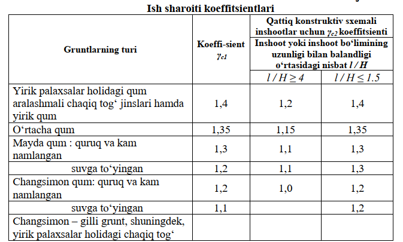
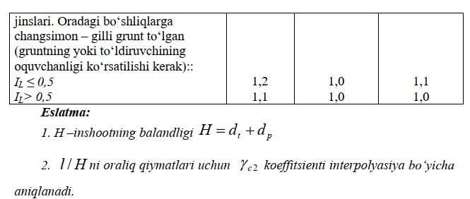
Bino yoki inshootning deformatsiya (shakli o‘zgarishi) bo‘yicha hisoblanayotgan formulalardagi ф,С,γ va hokazo qiymatlarining II bilan ifodalangan indeks hisob-kitoblar II guruhga mansub chekli holat bo‘yicha olib borilganligini bildiradi va γ,С hamda E qiymatlar 1 va 2-ilovalardagi normativ qiymatlariga teng qilib olinadi.
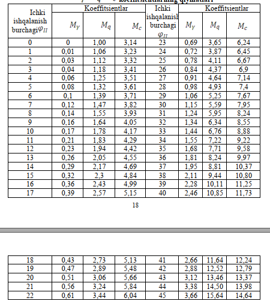